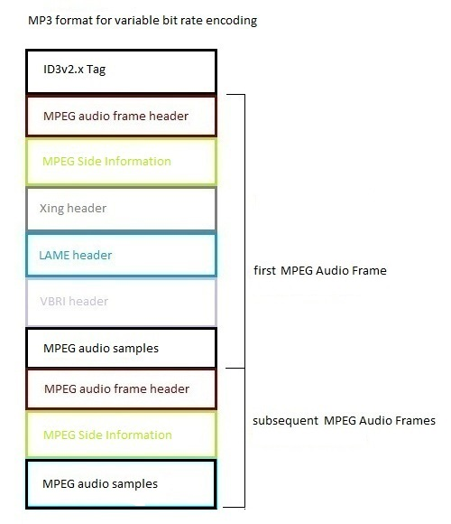

- java.lang.Object
-
- com.beaglebuddy.mpeg.LAMEHeader
-
public class LAMEHeader extends java.lang.Object

The LAME header is an extension of the
Xingheader and is found invariable bit rateencoded .mp3 files. It is an optional header, and if present, will be found within the first MPEG audio frame directly following theXing header.When the LAME header was first added in the LAME 3.12 encoder, it consisted of 20 bytes, with only the first 9 bytes being used for a version string. In LAME 3.90, the lame tag was expanded to include additional information, and expanded again in version 3.94. It is in version 3.94 that the Lame encoder started adding the Xing/LAME headers to
constant bit rateencoded .mp3s, albeit with theXing headerid being set to "Info" instead of "Xing". All of this is explained in the VBR header and LAME tag article.

-
-
Field Summary
Fields Modifier and Type Field and Description static intHEADER_MAX_SIZELAME headers after version 3.90 were 36 bytes longstatic intHEADER_MIN_SIZELAME headers prior to version 3.90 were 20 bytes long
-
Constructor Summary
Constructors Constructor and Description LAMEHeader()default constructor.LAMEHeader(byte[] bytes, int index)constructor.LAMEHeader(java.io.InputStream inputStream)constructor.
-
Method Summary
Methods Modifier and Type Method and Description intgetAthType()get the ATH type.ReplayGaingetAudiophileReplayGain()get the gain (volume) setting specified by the user for playing the .mp3 file.intgetBitrate()get the bit rate used to encode the .mp3 file.byte[]getCRC()get the 16 bit CRC value of the first 190 bytes of the Info header frame.intgetEncodingDelay()get the number of samples of silence added to the begining of the .mp3 fileintgetEncodingPadding()get the number of samples of silence added to the end of the .mp3 filejava.lang.StringgetId()get the LAME header id;intgetLowpassFilterFrequency()get the low pass filter frequency (in hz) setting used by the LAME encoder to encode the .mp3 file.bytegetMp3Gain()get the gain byte used by tools like mp3 Gain to normalize volumes for mp3's.byte[]getMusicCRC()get the 16 bit CRC value of the complete .mp3 music data as originally made by LAME.intgetMusicLength()get length (in bytes) from the LAME header to the last byte of the last mpeg audio frame.intgetNoiseShaping()get type of noise shaping used to encode the .mp3 file.floatgetPeakSignalAmplitude()get the peak signal amplitude that occurs in the digital audio samples in this frame.intgetPreset()get the preset used internally by the LAME encoder/decoder as an index into an internal LAME preset enum.ReplayGaingetRadioReplayGain()get the gain (volume) setting specified for playing the .mp3 file on the radio.intgetRevision()get the LAME header revision;intgetSize()gets the size (in bytes) of the LAME header.SourceFrequencygetSourceSampleFrequency()get the original audio source's sample frequency (in hz).StereoModegetStereoMode()get the stereo mode used to encode the .mp3 file.SurroundInfogetSurroundInfo()get the surround info.VBRMethodgetVBRMethod()get the bit rate encoding method used to encode the .mp3 file.VersiongetVersion()get the LAME header version;java.lang.StringtoString()get a string representation of the LAME header.booleanusedNoGapNext()get whether the .mp3 file was encoded by the LAME encoder with the --nogap option.booleanusedNoGapPrevious()get whether the .mp3 file was encoded by the LAME encoder with the --nogap option.booleanusedPsytune()get whether the .mp3 file was encoded by the LAME encoder with the --nspsytune option.booleanusedSafejoint()get whether the .mp3 file was encoded by the LAME encoder with the --nssafejoint option.booleanusedUnwise()get whether the user used some settings which would likely damage quality in normal circumstances.
-
-
-
Field Detail
-
HEADER_MIN_SIZE
public static final int HEADER_MIN_SIZE
LAME headers prior to version 3.90 were 20 bytes long- See Also:
- Constant Field Values
-
HEADER_MAX_SIZE
public static final int HEADER_MAX_SIZE
LAME headers after version 3.90 were 36 bytes long- See Also:
- Constant Field Values
-
-
Constructor Detail
-
LAMEHeader
public LAMEHeader()
default constructor.
-
LAMEHeader
public LAMEHeader(java.io.InputStream inputStream) throws java.io.IOException, ParseExceptionconstructor.- Parameters:
inputStream- input stream pointing to the LAME header in an mpeg audio frame in an .mp3 file.- Throws:
java.io.IOException- if there is an error while reading the LAME header from the .mp3 file.ParseException- if an invalid value is detected while parsing the LAME header's raw bytes.
-
LAMEHeader
public LAMEHeader(byte[] bytes, int index) throws ParseExceptionconstructor.- Parameters:
bytes- the raw bytes of an MPEG audio frame.index- the offset into the bytes of the MPEG audio frame where the LAME header begins.- Throws:
ParseException- if an invalid value is detected while parsing the LAME header's raw bytes.
-
-
Method Detail
-
getId
public java.lang.String getId()
get the LAME header id;- Returns:
- the LAME header id;
-
getVersion
public Version getVersion()
get the LAME header version;- Returns:
- the LAME header version;
-
getRevision
public int getRevision()
get the LAME header revision;- Returns:
- the LAME header revision;
-
getVBRMethod
public VBRMethod getVBRMethod()
get the bit rate encoding method used to encode the .mp3 file.- Returns:
- the bit rate encoding method used to encode the .mp3 file.
-
getLowpassFilterFrequency
public int getLowpassFilterFrequency()
get the low pass filter frequency (in hz) setting used by the LAME encoder to encode the .mp3 file.- Returns:
- the low pass filter frequency (in hz) setting used by the LAME encoder to encode the .mp3 file.
-
getPeakSignalAmplitude
public float getPeakSignalAmplitude()
get the peak signal amplitude that occurs in the digital audio samples in this frame.- Returns:
- the LAME header peak signal amplitude;
-
getRadioReplayGain
public ReplayGain getRadioReplayGain()
get the gain (volume) setting specified for playing the .mp3 file on the radio.- Returns:
- the gain (volume) setting specified for playing the .mp3 file on the radio.
-
getAudiophileReplayGain
public ReplayGain getAudiophileReplayGain()
get the gain (volume) setting specified by the user for playing the .mp3 file.- Returns:
- the gain (volume) setting specified by the user for playing the .mp3 file.
-
getAthType
public int getAthType()
get the ATH type.- Returns:
- the ATH type.
-
usedPsytune
public boolean usedPsytune()
get whether the .mp3 file was encoded by the LAME encoder with the --nspsytune option.- Returns:
- whether the .mp3 file was encoded by the LAME encoder with the --nspsytune option.
-
usedSafejoint
public boolean usedSafejoint()
get whether the .mp3 file was encoded by the LAME encoder with the --nssafejoint option.- Returns:
- whether the .mp3 file was encoded by the LAME encoder with the --nssafejoint option.
-
usedNoGapNext
public boolean usedNoGapNext()
get whether the .mp3 file was encoded by the LAME encoder with the --nogap option. This indicates that the --nogap continued to the next track.- Returns:
- boolean indicating that the --nogap continued to the next track. It is true for all but the last track in a --nogap album.
-
usedNoGapPrevious
public boolean usedNoGapPrevious()
get whether the .mp3 file was encoded by the LAME encoder with the --nogap option. This indicates that the --nogap continued to the previous track.- Returns:
- boolean indicating that the --nogap continued to the previous track. It is true for all but the first track in a --nogap album.
-
getBitrate
public int getBitrate()
get the bit rate used to encode the .mp3 file. If the .mp3 file was encoded using an ABR method, then this method will return the specified average bit rate. If the .mp3 file was encoded using a CBR method, then this method will return the actual bit rate. For a variable rate encoded .mp3 file, the minimal bitrate will returned. A value of 255 means that a bit rate of 255 or higher was used to encode the .mp3 file.- Returns:
- the bit rate used to encode the .mp3 file.
-
getEncodingDelay
public int getEncodingDelay()
get the number of samples of silence added to the begining of the .mp3 file- Returns:
- the number of samples of silence used in the encoding delay.
-
getEncodingPadding
public int getEncodingPadding()
get the number of samples of silence added to the end of the .mp3 file- Returns:
- the number of samples of silence used in the encoding padding.
-
getNoiseShaping
public int getNoiseShaping()
get type of noise shaping used to encode the .mp3 file.- Returns:
- type of noise shaping used to encode the .mp3 file.
-
getStereoMode
public StereoMode getStereoMode()
get the stereo mode used to encode the .mp3 file.- Returns:
- the stereo mode used to encode the .mp3 file.
-
usedUnwise
public boolean usedUnwise()
get whether the user used some settings which would likely damage quality in normal circumstances.- Returns:
- whether the user used some settings which would likely damage quality in normal circumstances.
-
getSourceSampleFrequency
public SourceFrequency getSourceSampleFrequency()
get the original audio source's sample frequency (in hz).- Returns:
- the original audio source's sample frequency (in hz).
-
getMp3Gain
public byte getMp3Gain()
get the gain byte used by tools like mp3 Gain to normalize volumes for mp3's.- Returns:
- the gain settings used to normalize the sound of the .mp3 file.
-
getSurroundInfo
public SurroundInfo getSurroundInfo()
get the surround info.- Returns:
- the surround info.
-
getPreset
public int getPreset()
get the preset used internally by the LAME encoder/decoder as an index into an internal LAME preset enum.- Returns:
- one of the 2047 presets allowed ey the LAME encoder.
-
getMusicLength
public int getMusicLength()
get length (in bytes) from the LAME header to the last byte of the last mpeg audio frame.- Returns:
- the length (in bytes) from the LAME header to the last byte of the last mpeg audio frame.
-
getMusicCRC
public byte[] getMusicCRC()
get the 16 bit CRC value of the complete .mp3 music data as originally made by LAME.- Returns:
- the 16 bit CRC value of the complete .mp3 music data as originally made by LAME.
-
getCRC
public byte[] getCRC()
get the 16 bit CRC value of the first 190 bytes of the Info header frame.- Returns:
- the 16 bit CRC value of the first 190 bytes of the Info header frame.
-
getSize
public int getSize()
gets the size (in bytes) of the LAME header. When the LAME header was first introduced with the LAME 3.12 encoder, it consisted of a 20-byte LAME version string. This was actually comprised of only a nine byte version string, with the remaining 11 bytes unused. In LAME 3.90, the lame tag was expanded to a 36 bytes in order to include numerous fields.- Returns:
- the size of the LAME header.
-
toString
public java.lang.String toString()
get a string representation of the LAME header.- Overrides:
toStringin classjava.lang.Object- Returns:
- a string representation of the LAME header.
-
-